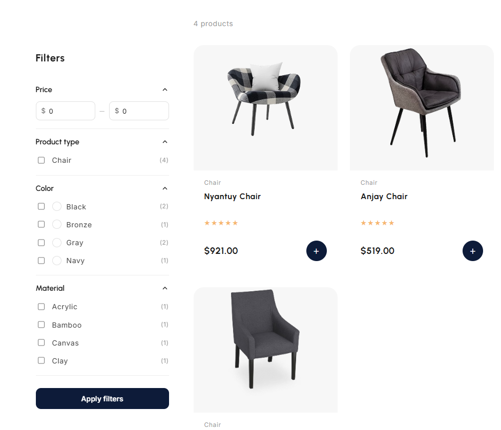
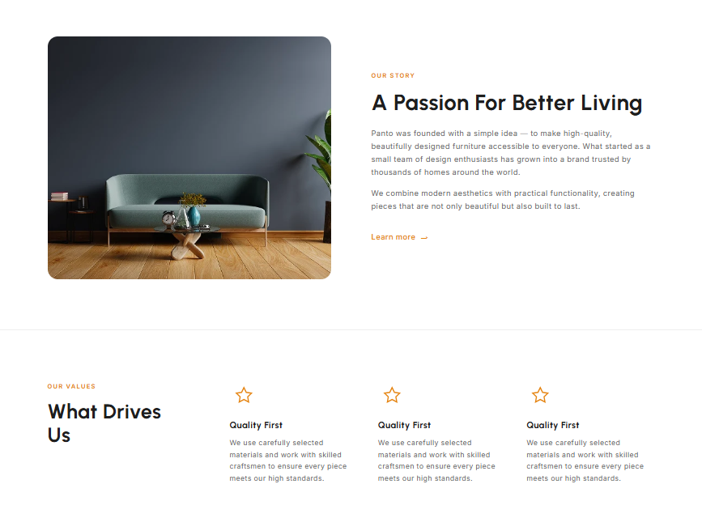

Panto
Тема Shopify на базі Dawn за макетом із Figma: власні секції та підключення Google Fonts. Кастомна розробка сторінок.
Верстав секції під редактор теми Shopify: банер, підбірка товарів і блок переваг, кожна з власними налаштуваннями та анімацією появи при прокручуванні.

Секція товарів налаштована через редактор теми: можна вибрати колекцію, кількість карток у рядку та сортування — за популярністю, ціною чи датою додавання. Логіка написана так, щоб однаково добре працювала і з невеликою підбіркою, і з великою колекцією.

Код чистий і без зайвого: швидке завантаження сторінок і зручна робота в редакторі теми Shopify.